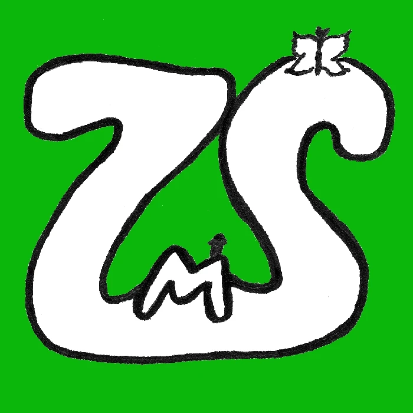

Kam až dojdem o jarních prázdninách
Vyberte cíl. Sbírejte kilometry. Cestujte světem.
Načítám...
Tip: Klikni na řádek třídy v tabulce a mapa se na ni přiblíží.
Načítám trasy...
Třída
Cíl
Km aktuálně
Délka trasy
Hotovo
Zbývá
Start (Roudnice nad Labem)
Aktuální pozice třídy
🚩 Cíl třídy